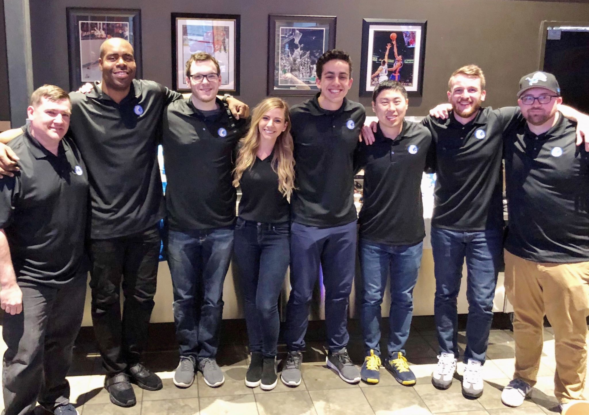

Since October of 2018, I've been working as a research assistant with the School of Information's Center for Social Media Responsibility. A lot of the work I've done has revolved around identifing disagreement and diversity of perspectives in social media conversations. Alongside this work, I spent the Winter 2019 semester doing an independent study (SI 491 in my coursework) learning to build a simple text classification model using techniques such as tokenization, stemming, and regression. Over the last two months, my work has expanded to building web scrapers and API pullers to get more information on where users get their news from and how civility and conversation quality vary across social media sites.
As a staff writer at Pride of Detroit since July 2018, I've gotten to turn my passions into profession. I've had the chance to produce articles, podcasts, and social media posts about all things Detroit Lions for a massive audience. My personal brand on twitter now revolves around my Detroit Lions coverage (and occasionally my highly questionable food takes). It has really been a life-changing experience as I've turned my fandom into a staple of my professional side. Not to flex (totally to flex), but I still get caught off guard on the occasions when I meet people and they know who I am. Here is a picture of a large portion of our staff from our first ever live NFL Draft party that we hosted in downtown Detroit. I really love this experience.
For the last two and a half years, I've worked as an independently contracted English tutor for Ringle. I tutor Korean professionals (predominantly corporate workers and graduate students) in English grammar, fluency, vocabulary, and more. The experience has been realyl rewarding, as some of my students hold very high standings in their respective companies, so I get to learn from them just as much as they learn from me. Through this opportunity I've learned more about other cultures, heard all about life in the corporate world, and gotten to sharpen my own English skills.